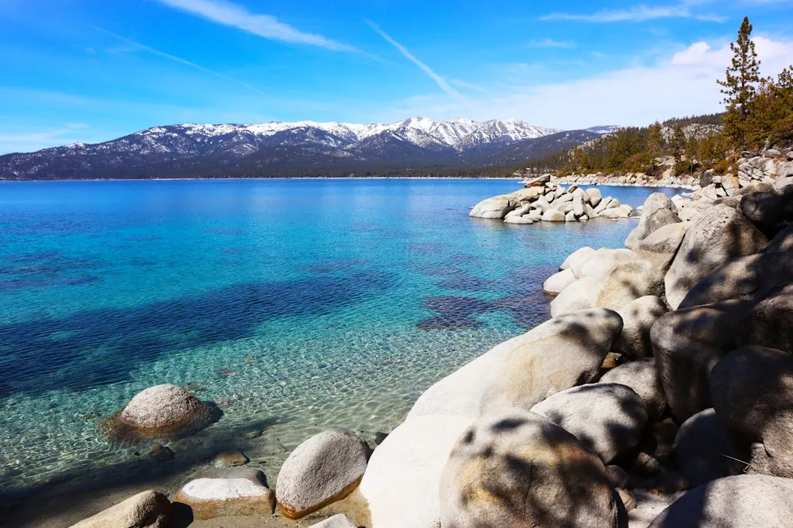

Lake Tahoe Travel Guide: North vs South + Year-Round Activities
· By GoldenPath Guide Editorial Team
On the climb up from Sacramento the Sierra Nevada fills the windshield, and then suddenly it is there — a mile of alpine water so clear you can count the rocks on the bottom. Lake Tahoe sits astride the California–Nevada border, about three and a half hours from San Francisco by car or a quick hour by plane. Whatever the season, the lake does not disappoint.
Choosing North vs South Lake Tahoe
The lake has two distinct personalities, and picking a side shapes your whole trip.
| Region | Vibe | Good For |
|---|---|---|
| South Lake Tahoe | Resort-y, lively, evening entertainment across the state line in Nevada | Families, first-timers, nightlife, skiing |
| North Lake Tahoe | Quieter, scenic, more local | Couples, scenery, hiking, relaxed pace |
South Lake Tahoe
The south shore — including Stateline, Nevada — is the busiest and most convenient. Ski resorts like Heavenly Mountain sit right above a lively village and the Nevada-side resort district just across the state line, and Heavenly’s gondola lifts you to sweeping lake views. Emerald Bay State Park, with its tiny Fannette Island and the Vikingsholm mansion, is a short scenic drive away and genuinely worth it.
North Lake Tahoe
The north shore runs quieter and more scenic, with smaller resorts such as Palisades Tahoe (formerly Squaw Valley) and Northstar, plus easy beaches at Sand Harbor and Kings Beach. Nearby Truckee, a charming gold-rush town, makes a lovely base with boutique lodging and solid dining.
Summer on Lake Tahoe
Summer is the lake at its most generous. Days stay clear and hover in the comfortable 70s°F. Popular ways to spend them:
- Beach days — Sand Harbor (reservation required), Kings Beach and Commons Beach.
- Hiking — the Tahoe Rim Trail and trails up Mount Tallac for panoramic views.
- Kayaking and paddleboarding — calm water, especially in Emerald Bay.
- Boat cruises — the best way to appreciate the lake’s famous clarity.
- Biking — the paved Tahoe Bike Trail along the south and west shores.
Winter on Lake Tahoe
Tahoe is a premier ski destination, home to some of the heaviest snowfall in the Sierra. Resorts run from big destination mountains to small local hills. January and February are peak; late winter (March) often brings lighter crowds and fresh powder after storms.
Spring & Fall
- Spring (April–May) — quiet, snowmelt feeds rushing waterfalls, and it makes a pleasant shoulder season.
- Fall (September–October) — crisp air, turning aspens and uncrowded trails. One of the best times to visit.
Practical Tips
- Reservations: Popular beaches like Sand Harbor and trailhead parking require advance permits in summer.
- Altitude: The lake sits at about 6,200 feet. Drink water and take it easy the first day.
- Fuel & food: Prices in the ski villages are high; fill up and grab groceries in town.
- Book ahead: Lodging fills early in both summer and peak ski season.
Lift Tickets and Season Passes
Winter lift pricing rewards commitment. Heavenly day tickets run $150 to $220 at the window, with online advance purchase cutting 15 to 25 percent; Palisades Tahoe and Northstar price similarly. The Epic and Ikon passes (roughly $750 to $1,100) break even around six to eight days, so a week-long trip plus one more weekend justifies the pass. Beginners save real money at smaller hills: Diamond Peak and Donner Ski Ranch sell day tickets near $80 to $110 with shorter lines and lake views included. Rentals run $50 to $70 a day at resort shops, $35 to $50 at Truckee and South Lake rental outfits off the hill. Lessons start near $150 for a half-day group session — book the first morning of the trip so the skills compound all week. Night skiing at select resorts runs $60 to $80 and suits arrival days. Skip walk-up window prices entirely; every resort discounts online purchases made 48-plus hours ahead.
Beaches, Hikes and Summer Reservations
Summer's best assets now require planning. Sand Harbor State Park charges $10 to $15 per vehicle but its lots fill by 10:30 a.m. on July and August weekends — arrive before 9:30 or use the East Shore Trail bike path from Incline Village. Emerald Bay's Vikingsholm mansion tours run $15 for adults on summer afternoons; the Rubicon Trail from D.L. Bliss to the bay covers 5 miles of the shoreline's best swimming coves. Kayak and paddleboard rentals run $25 to $40 an hour at Kings Beach and Tahoe City; morning water stays glassy until about 11 a.m. The 165-mile Tahoe Rim Trail breaks into day segments — the Mount Tallac climb (10 miles round-trip, 3,300 feet of gain) is the classic, start before 7 a.m. for parking at the trailhead. Campgrounds book out six months ahead on release day; midweek September sites stay reservable two to three weeks out with warm water and empty beaches.
Where to Stay and Winter Driving Rules
South Lake Tahoe's Stateline corridor holds the big lodges at $200 to $350 a night in ski season with walk-to-lift access at Heavenly; the motels along Highway 50 run $120 to $180 and add a 10-minute drive. North shore options in Tahoe City and Kings Beach run $180 to $280 with quieter nights and faster Bay Area access. Vacation rentals sleep groups cheapest but many South Lake properties sit inside strict noise and occupancy enforcement zones — read the permit rules before booking a party-sized house. Winter driving is the trip's real skill: carry chains or cables even with all-wheel drive, since I-80 and Highway 50 impose chain controls on dozens of days each winter and rental contracts often forbid chain installation (check the fine print and prefer AWD vehicles). Storm arrivals should budget an extra two hours over the pass. Skip Friday-evening Bay Area departures in ski season; the pass jam regularly doubles the four-hour drive.